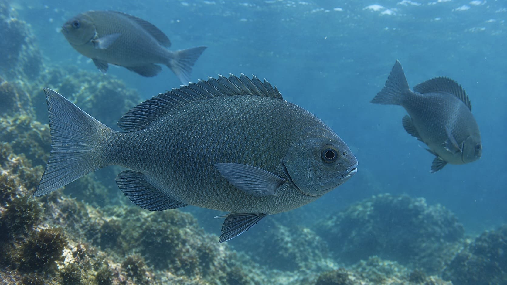
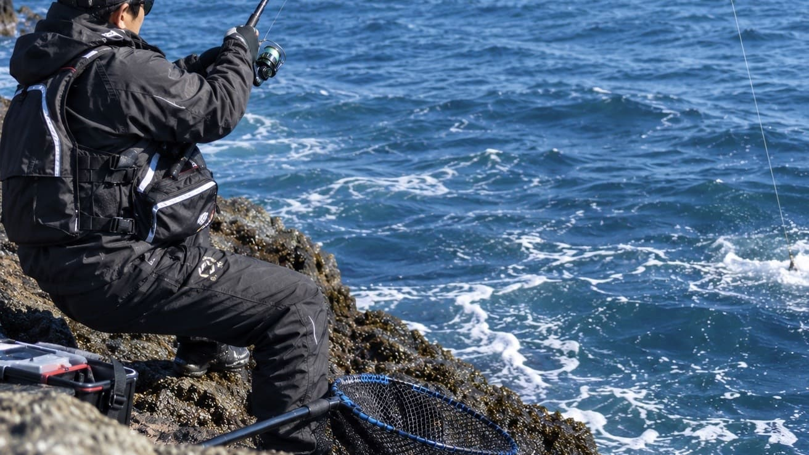

【徹底解説】強烈な引きと知的な駆け引き！磯・堤防の人気ターゲット「メジナ（グレ）」を釣る

ウキ釣りにおいて、クロダイと人気を二分するほど多くのファンを熱狂させているターゲット、それが「メジナ」です。 関西地方では「グレ」、九州地方では「クロ」という呼び名で親しまれ、トーナメント形式の全国大会が開催されるほどの競技性も持ち合わせています。 足場の良い防波堤からでも十分に狙える手軽さがありながら、掛かった瞬間に見せる暴力的なまでの引きの強さと、潮やエサを読むテクニックの奥深さが、多くの釣り人を虜にしてやみません。1. 似て非なる2つの顔。「口太」と「尾長」を見極める
釣り人が対象とするメジナには、主に2つの種類が存在します。
- メジナ（通称：口太・クチブト）：最大で60cmほどに成長し、体色は青緑を帯びた黒色をしています。体高が高く、フカセ釣りの入門ターゲットとしても最適です。
- クロメジナ（通称：尾長・オナガ）：メジナよりも外洋性の回遊エリアを好み、全長80cm以上という大型に成長する荒磯の主です。体型はやや細長く、エラ蓋の縁が黒くなっていることや、尾ビレの上下が長く伸びていることで見分けることができます。
メジナは雑食性の魚であり、甲殻類や底生動物のほかに、海藻などの植物質も好んで食べます。普段は藻類などを食べている魚が、釣り人が撒く「オキアミ（動物質）」に猛烈に反応して集まってくるという習性が、この釣りのゲーム性を高めています。
2. メジナ釣りの四季と「寒グレ」の魅力
メジナは一年を通して狙うことができますが、季節によって行動パターンが劇的に変わります。
- 春・夏：春は産卵期（2〜6月頃）にあたり、大型が活発にエサを追うことがあります。夏は小型のメジナやエサ取りの小魚が活発になるため、それらをどうやってかわすかが大型を釣るカギとなります。
- 秋：水温が安定し、魚の活性が高まるため、数が釣れやすい面白いシーズンです。
- 冬（寒グレ）：メジナ釣りの大本命シーズンです。12月〜2月頃の低水温期はエサ取りが減り、本命にエサを届けやすくなります。さらに、この時期に海藻をたっぷり食べたメジナは「寒グレ」と呼ばれ、臭みが消えて非常に美味しい旬を迎えます。
3. メジナが潜む一級ポイントの探し方

メジナは岩礁帯を好むため、砂浜のど真ん中ではなく、岩やテトラポッド、海藻などの「身を隠せる変化」がある場所を狙うのが鉄則です。- 防波堤の狙い目：潮通しが良いことが絶対条件です。消波ブロックの周辺、防波堤の継ぎ目の隙間、基礎の沈み根などを探りましょう。また、メジナは人の影や物音に非常に敏感なため、防波堤の端から一歩下がって静かに狙うのが釣果を伸ばすコツです。
- 磯の狙い目「サラシ」と「潮のヨレ」：波が岩にぶつかってできる白い泡の広がり「サラシ」や、潮がぶつかり合う「潮のヨレ」は超一級ポイントです。警戒心が薄れ、エサとなる小型生物が集まるため、ここへコマセ（撒き餌）を打ち込むのがセオリーとなります。
4. 釣果を左右する「ウキフカセ釣り」の極意
メジナ釣りの王道は、コマセを使って魚を寄せ、付けエサを自然に漂わせる「ウキフカセ釣り」です。
【タックルと仕掛けの基本】
- 竿とリール：小〜中型狙いなら1〜1.5号の磯竿（5.3m前後）に2000〜3000番のスピニングリールを合わせます。離島などで大型の尾長を狙う場合は、強烈な引きに耐えるために2号クラスの磯竿と太めのライン（3.5〜4号など）が必要です。
- ウキの選び方：基本は「円錐ウキ」を使用します。より自然にエサを流したい食い渋り時は「00号」や「0号」といった軽い仕掛けを使い、風が強い日や潮が速い場合は「B」や「G2」などの重めのウキで仕掛けを安定させます。
- エサの工夫：付けエサもコマセもオキアミが主流です。警戒心が高く釣りづらい状況では、小さめのオキアミを選んだり、ハリを極小サイズ（グレバリの4号など）に落としたりする繊細な工夫が求められます。
【コマセと仕掛けの「同調」が最大のカギ】
初心者がやりがちな失敗は、最初にコマセを大量に一気撒きしてしまうことです。 メジナ釣りは「魚のいる場所に投げる」のではなく、「コマセで魚が食う場所を作る」釣りです。一定のリズムで少量のコマセを撒き続け、沈んでいくコマセの帯の中に、自分の付けエサを紛れ込ませる「同調」のテクニックが釣果を決定づけます。仕掛けを入れる前後にコマセを撒き、エサをサンドイッチ状態にするのが効果的です。
【タナ（深さ）を制する者がメジナを制す】
コマセに反応したメジナは、底から中層、時には表層まで浮いてエサを拾います。 ウキがスーッと沈めばタナが合っている証拠ですが、モゾモゾするだけでエサが盗られる場合は、ウキ下が深すぎるか浅すぎます。状況に応じて魚のいるタナは激しく変わるため、「メジナは○mにいる」と決めつけず、こまめにウキ下を調節して魚のタナを探り当てましょう。
5. 最初の数秒が勝負！強烈な引きとのファイト
ウキが沈んでアワセを入れた瞬間、メジナは自分の身を守るために一直線に海底の根（岩）に向かって突っ込みます。 ここで根に潜られてしまうと、ハリスが擦れて切断されてしまいます。特に大型の尾長を掛けた場合は、余裕を持った態勢で竿の弾力を活かし、走りが止まったら一気に勝負をかける強気なやり取りが必要です。掛かった直後の数秒間、いかに魚の頭をコントロールして根から引き剥がすかが腕の見せ所です。
6. 釣った後の最高のご褒美！美味しく食べるために
引きを楽しんだ後は、極上の味わいが待っています。 メジナに「磯臭い」というイメージを持つ人もいますが、冬の時期の個体や、釣った直後の処理次第でその評価は一変します。 釣れたらすぐに血抜きと内臓処理を行い、氷でしっかりと冷却することで鮮度と味を保つことができます。脂の乗った寒グレは、塩焼きや煮付けはもちろん、鮮度が良ければ刺身やタタキにしても絶品です（※生食の場合は寄生虫等に十分注意し、適切な処理を行ってください）。
📍 関東の生息・釣果スポット
※マップ上の赤いドットが釣れるポイントです。